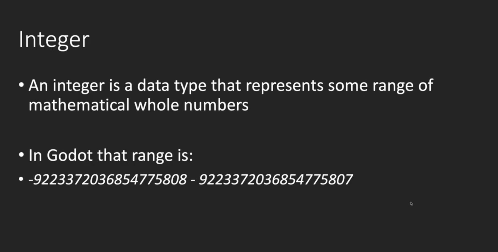
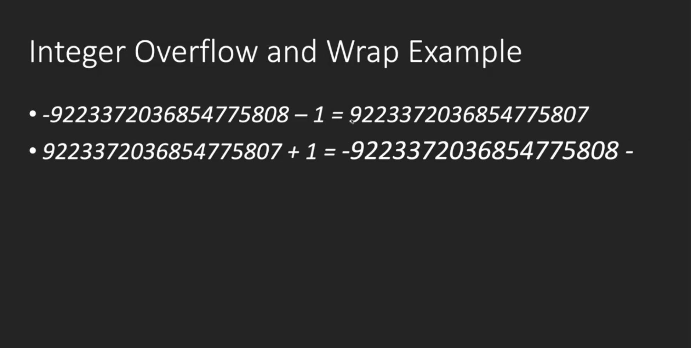

1. 脚本的定义
- 游戏脚本 Script ，用代码来控制游戏对象
- godot使用 GdScript 作为脚本语言
- 注意：自本章开始，每节课的项目源码都放在了github项目godot-start，可以直接对照示例项目
- 游戏开发，也是一种程序设计，如果是0基础的同学，建议先学习一个强类型语言比如Java，C#，C++，再来学习GdScript就一通百通了
2. 脚本的使用
- 如何使用一个脚本？
新建脚本 hello.gd ，编辑代码 ，保存一下
把脚本挂载到游戏节点上
运行游戏，点 Play Scene 运行当前游戏场景，在 Output 窗口里观察打印输出
3. 认识脚本
- 因为是GdScript是弱类型语言，所以比较自由，但是我们可以约定一些原则让代码更加的规范：
类名必须与文件名相同，且为小写
尽量继承于 Node2D 节点，Node2D 节点中的Transform是我们用的最多的节点
- 常用函数内部执行顺序，_init _ready _process
默认定义了一些事件函数，例如，
_init() 脚本初始化的时候调用，对象的构造器，类似于Java的构造函数construct
_ready() 开始调用一次，可用于初始化脚本
_process(delta) 每帧调用，帧间隔不等，可用于更新游戏
4.变量和数据类型
- 变量是用于存储信息的"容器"。
var x=5;
var y=6;
var z=x+y;
就像代数那样
x=5
y=6
z=x+y
在代数中，我们使用字母（比如 x）来保存值（比如 5）。
通过上面的表达式 z=x+y，我们能够计算出 z 的值为 11。
在 godot 中，这些字母被称为变量。
- gds数据类型分类
- bool，一个字节，默认为false
- int(同C++和Java long)，8个字节，默认为0
- float(同C++和Java double)，8个字节，默认为0
- String，默认为null，字符串可以存储一系列字符，如 "John Doe"。
- 数组
- 对象
- null，变量没有被赋值，则默认为null



5.导出变量
- export关键字可以让变量在编辑器中编辑
# 导出一个数字
export var a = 1
# 导出一个节点路径
export var b:NodePath
# 导出一个节点路径，不同的写法
export(NodePath) var c
# 导出一个文件路径
export(String, FILE) var e
# 导出一个文件路径，以txt结尾
export(String, FILE, "*.txt") var d
# 导出一个资源文件路径
export(Resource) var f
# 导出一个颜色
export(Color, RGB) var g
6.函数
- 函数是可以简单的理解为当它被调用时执行的可重复使用的代码块。
- 函数就是包裹在花括号中的代码块，前面使用了关键词 func，当调用该函数时，会执行函数内的代码。
- 空函数需要使用pass关键字
func sayHello():
# 执行代码
- 调用带参数的函数，在调用函数时，您可以向其传递值，这些值被称为参数。
func sayHello(param1， param2):
# 执行代码
- 带有返回值的函数，有时，我们会希望函数将值返回调用它的地方，通过使用 return 语句就可以实现。
- return方法可以指定返回的类型
func sayHello(param1， param2):
# 执行代码
return x
7.变量的作用域
- 局部作用域，变量在函数内声明，变量为局部作用域，只能在函数内部访问
# 此处不能调用 carName 变量
func myFunction():
var carName = "Volvo";
# 函数内可调用 carName 变量
- 全局变量，变量在函数外定义，即为全局变量，整个脚本文件中都可以使用
var carName = " Volvo";
# 此处可调用 carName 变量
func myFunction():
# 函数内可调用 carName 变量
8. 运算符
- 算术运算符
+ 加法 x=y+2 7 5
- 减法 x=y-2 3 5
* 乘法 x=y*2 10 5
/ 除法 x=y/2 2.5 5
% 取模（余数） x=y%2 1 5
- 赋值运算符，赋值运算符用于给 GdScript 变量赋值
= x=y x=5
+= x+=y x=x+y x=15
-= x-=y x=x-y x=5
*= x*=y x=x*y x=50
/= x/=y x=x/y x=2
%= x%=y x=x%y x=0
- 比较运算符，比较运算符在逻辑语句中使用，以测定变量或值是否相等
== 等于 x==8 false
!= 不等于 x!=8 true
> 大于 x>8 false
< 小于 x<8 true
>= 大于或等于 x>=8 false
<= 小于或等于 x<=8 true
- 逻辑运算符，逻辑运算符用于测定变量或值之间的逻辑。
&& and (x < 10 && y > 1) 为 true
|| or (x==5 || y==5) 为 false
! not !(x==y) 为 true
9. 条件语句
-
通常在写代码时，您总是需要为不同的决定来执行不同的动作。您可以在代码中使用条件语句来完成该任务。
-
if 语句 - 只有当指定条件为 true 时，使用该语句来执行代码
if (condition):
当条件为 true 时执行的代码
- if...else 语句 - 当条件为 true 时执行代码，当条件为 false 时执行其他代码
if (condition):
当条件为 true 时执行的代码
else:
当条件不为 true 时执行的代码
- if...else if....else 语句- 使用该语句来选择多个代码块之一来执行
if (condition1):
当条件 1 为 true 时执行的代码
else if (condition2):
当条件 2 为 true 时执行的代码
else:
当条件 1 和 条件 2 都不为 true 时执行的代码
- match(switch) 语句 - 使用该语句来选择多个代码块之一来执行
10. 循环语句
- 循环可以将代码块执行指定的次数，如果您希望一遍又一遍地运行相同的代码，并且每次的值都不同，那么使用循环是很方便的
- for
- while
- break 语句跳出循环后，会继续执行该循环之后的代码（如果有的话）
- continue 语句中断循环中的迭代，如果出现了指定的条件，然后继续循环中的下一个迭代
11. 数组和字典的遍历
- 数组遍历
func arrayIterator():
# range等价于for(int i = 0; i < 20; i++)
print("数组遍历方法1：")
for i in range(3):
print(i)
print("数组遍历方法2：")
for ele in arr:
print(ele)
print("数组遍历方法3：")
for index in range(arr.size()):
print(arr[index])
- 字典遍历
func dictionaryIterator():
print("字典遍历方法1：")
for key in dict:
print("key:" + key as String)
print("value:" + dict[key] as String)
print("字典遍历方法2：")
for key in dict.keys():
print("key:" + key as String)
print("value:" + dict[key] as String)
print("字典遍历方法3：")
for value in dict.values():
print("value:" + value as String)
12. 静态变量和静态方法
- const变量（静态变量）
const ANSWER = 42
- 静态方法
static func getAnswer():
return ANSWER
13. 对象
- 真实生活中的对象，属性和方法
- 真实生活中，一辆汽车是一个对象。对象有它的属性，如重量和颜色等，方法有启动停止等
# Inner class，默认继承Object
class Animal:
extends Object # 如果不指定继承的类，默认基础Object
const STATIC_FIELD = "静态变量"
# 属性
var height: int
func _init():
print("Animal 构造方法")
func move():
print("animal，移动")
static func staticFuction():
pass
14. 调试
- 在编写 GdScript 时，如果没有调试工具将是一件很痛苦的事情。
- 你的代码可能包含语法错误，逻辑错误，有了调试工具，这些错误比较容易发现。